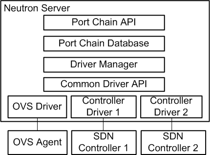
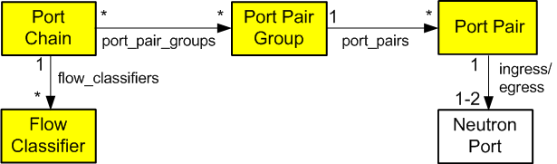

Service Function Chaining¶
Service function chain (SFC) essentially refers to the software-defined networking (SDN) version of policy-based routing (PBR). In many cases, SFC involves security, although it can include a variety of other features.
Fundamentally, SFC routes packets through one or more service functions instead of conventional routing that routes packets using destination IP address. Service functions essentially emulate a series of physical network devices with cables linking them together.
A basic example of SFC involves routing packets from one location to another through a firewall that lacks a “next hop” IP address from a conventional routing perspective. A more complex example involves an ordered series of service functions, each implemented using multiple instances (VMs). Packets must flow through one instance and a hashing algorithm distributes flows across multiple instances at each hop.
Architecture¶
All OpenStack Networking services and OpenStack Compute instances connect to a virtual network via ports making it possible to create a traffic steering model for service chaining using only ports. Including these ports in a port chain enables steering of traffic through one or more instances providing service functions.
A port chain, or service function path, consists of the following:
A set of ports that define the sequence of service functions.
A set of flow classifiers that specify the classified traffic flows entering the chain.
If a service function involves a pair of ports, the first port acts as the ingress port of the service function and the second port acts as the egress port. If both ports use the same value, they function as a single virtual bidirectional port.
A port chain is a unidirectional service chain. The first port acts as the head of the service function chain and the second port acts as the tail of the service function chain. A bidirectional service function chain consists of two unidirectional port chains.
A flow classifier can only belong to one port chain to prevent ambiguity as to which chain should handle packets in the flow. A check prevents such ambiguity. However, you can associate multiple flow classifiers with a port chain because multiple flows can request the same service function path.
Currently, SFC lacks support for multi-project service functions.
The port chain plug-in supports backing service providers including the OVS driver and a variety of SDN controller drivers. The common driver API enables different drivers to provide different implementations for the service chain path rendering.


See the networking-sfc documentation for more information.
Resources¶
Port chain¶
id- Port chain IDproject_id- Project IDname- Readable namedescription- Readable descriptionport_pair_groups- List of port pair group IDsflow_classifiers- List of flow classifier IDschain_parameters- Dictionary of chain parameters
A port chain consists of a sequence of port pair groups. Each port pair group is a hop in the port chain. A group of port pairs represents service functions providing equivalent functionality. For example, a group of firewall service functions.
A flow classifier identifies a flow. A port chain can contain multiple flow classifiers. Omitting the flow classifier effectively prevents steering of traffic through the port chain.
The chain_parameters attribute contains one or more parameters for the
port chain. Currently, it only supports a correlation parameter that
defaults to mpls for consistency with Open vSwitch (OVS)
capabilities. Future values for the correlation parameter may include
the network service header (NSH).
Port pair group¶
id- Port pair group IDproject_id- Project IDname- Readable namedescription- Readable descriptionport_pairs- List of service function port pairs
A port pair group may contain one or more port pairs. Multiple port pairs enable load balancing/distribution over a set of functionally equivalent service functions.
Port pair¶
id- Port pair IDproject_id- Project IDname- Readable namedescription- Readable descriptioningress- Ingress portegress- Egress portservice_function_parameters- Dictionary of service function parameters
A port pair represents a service function instance that includes an ingress and egress port. A service function containing a bidirectional port uses the same ingress and egress port.
The service_function_parameters attribute includes one or more parameters
for the service function. Currently, it only supports a correlation parameter
that determines association of a packet with a chain. This parameter defaults
to none for legacy service functions that lack support for correlation such
as the NSH. If set to none, the data plane implementation must provide
service function proxy functionality.
Flow classifier¶
id- Flow classifier IDproject_id- Project IDname- Readable namedescription- Readable descriptionethertype- Ethertype (IPv4/IPv6)protocol- IP protocolsource_port_range_min- Minimum source protocol portsource_port_range_max- Maximum source protocol portdestination_port_range_min- Minimum destination protocol portdestination_port_range_max- Maximum destination protocol portsource_ip_prefix- Source IP address or prefixdestination_ip_prefix- Destination IP address or prefixlogical_source_port- Source portlogical_destination_port- Destination portl7_parameters- Dictionary of L7 parameters
A combination of the source attributes defines the source of the flow. A
combination of the destination attributes defines the destination of the flow.
The l7_parameters attribute is a place holder that may be used to support
flow classification using layer 7 fields, such as a URL. If unspecified, the
logical_source_port and logical_destination_port attributes default to
none, the ethertype attribute defaults to IPv4, and all other
attributes default to a wildcard value.
Operations¶
Create a port chain¶
The following example uses the openstack command-line interface (CLI) to
create a port chain consisting of three service function instances to handle
HTTP (TCP) traffic flows from 192.0.2.11:1000 to 198.51.100.11:80.
Instance 1
Name: vm1
Function: Firewall
Port pair: [p1, p2]
Instance 2
Name: vm2
Function: Firewall
Port pair: [p3, p4]
Instance 3
Name: vm3
Function: Intrusion detection system (IDS)
Port pair: [p5, p6]
Note
The example network net1 must exist before creating ports on it.
Source the credentials of the project that owns the
net1network.Create ports on network
net1and record the UUID values.$ openstack port create p1 --network net1 $ openstack port create p2 --network net1 $ openstack port create p3 --network net1 $ openstack port create p4 --network net1 $ openstack port create p5 --network net1 $ openstack port create p6 --network net1
Launch service function instance
vm1using portsp1andp2,vm2using portsp3andp4, andvm3using portsp5andp6.$ openstack server create --nic port-id=P1_ID --nic port-id=P2_ID vm1 $ openstack server create --nic port-id=P3_ID --nic port-id=P4_ID vm2 $ openstack server create --nic port-id=P5_ID --nic port-id=P6_ID vm3
Replace
P1_ID,P2_ID,P3_ID,P4_ID,P5_ID, andP6_IDwith the UUIDs of the respective ports.Note
This command requires additional options to successfully launch an instance. See the CLI reference for more information.
Alternatively, you can launch each instance with one network interface and attach additional ports later.
Create flow classifier
FC1that matches the appropriate packet headers.$ openstack sfc flow classifier create \ --description "HTTP traffic from 192.0.2.11 to 198.51.100.11" \ --ethertype IPv4 \ --source-ip-prefix 192.0.2.11/32 \ --destination-ip-prefix 198.51.100.11/32 \ --protocol tcp \ --source-port 1000:1000 \ --destination-port 80:80 FC1
Note
When using the (default) OVS driver, the
--logical-source-portparameter is also requiredCreate port pair
PP1with portsp1andp2,PP2with portsp3andp4, andPP3with portsp5andp6.$ openstack sfc port pair create \ --description "Firewall SF instance 1" \ --ingress p1 \ --egress p2 PP1 $ openstack sfc port pair create \ --description "Firewall SF instance 2" \ --ingress p3 \ --egress p4 PP2 $ openstack sfc port pair create \ --description "IDS SF instance" \ --ingress p5 \ --egress p6 PP3
Create port pair group
PPG1with port pairPP1andPP2andPPG2with port pairPP3.$ openstack sfc port pair group create \ --port-pair PP1 --port-pair PP2 PPG1 $ openstack sfc port pair group create \ --port-pair PP3 PPG2
Note
You can repeat the
--port-pairoption for multiple port pairs of functionally equivalent service functions.Create port chain
PC1with port pair groupsPPG1andPPG2and flow classifierFC1.$ openstack sfc port chain create \ --port-pair-group PPG1 --port-pair-group PPG2 \ --flow-classifier FC1 PC1
Note
You can repeat the
--port-pair-groupoption to specify additional port pair groups in the port chain. A port chain must contain at least one port pair group.You can repeat the
--flow-classifieroption to specify multiple flow classifiers for a port chain. Each flow classifier identifies a flow.
Update a port chain or port pair group¶
Use the openstack sfc port chain set command to dynamically add or remove port pair groups or flow classifiers on a port chain.
For example, add port pair group
PPG3to port chainPC1:$ openstack sfc port chain set \ --port-pair-group PPG1 --port-pair-group PPG2 --port-pair-group PPG3 \ --flow-classifier FC1 PC1
For example, add flow classifier
FC2to port chainPC1:$ openstack sfc port chain set \ --port-pair-group PPG1 --port-pair-group PPG2 \ --flow-classifier FC1 --flow-classifier FC2 PC1
SFC steers traffic matching the additional flow classifier to the port pair groups in the port chain.
Use the openstack sfc port pair group set command to perform dynamic scale-out or scale-in operations by adding or removing port pairs on a port pair group.
$ openstack sfc port pair group set \ --port-pair PP1 --port-pair PP2 --port-pair PP4 PPG1
SFC performs load balancing/distribution over the additional service functions in the port pair group.